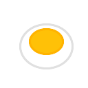

The Ultimate Protlin IDE
Born from an Egg, Maximum Myriad 🥚
Intuitive file management with project tree and code outline
Syntax highlighting, auto-completion, and smart indentation
Real-time execution results and debugging information
Graphics tools, snippets, and performance monitoring
Built with ❤️ for the Protlin community
"Every great program starts as a simple egg of an idea"